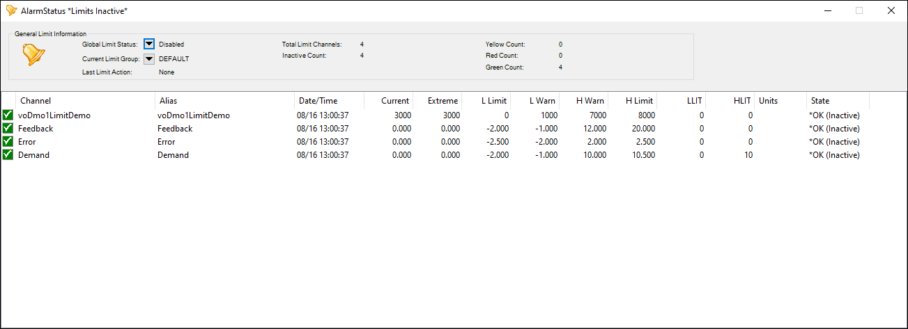
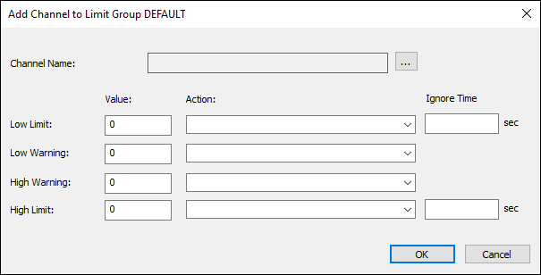
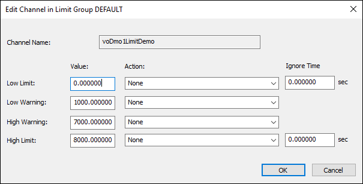
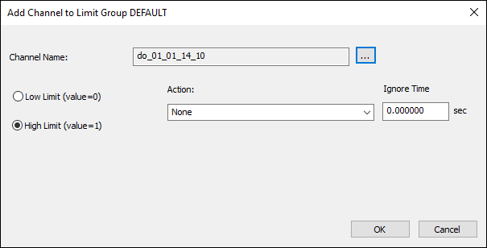
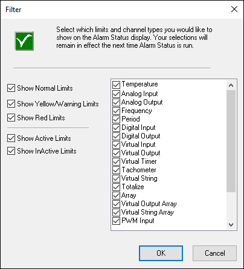

iTest User's Guide
The AlarmStatus application allows you to view database channels that have limits defined. This application allows for the addition or removal of limits without having to rebuild the test.
The AlarmStatus interface represents the current status of the database channels. Each column is described in the table below.
AlarmStatus Interface

AlarmStatus Column Descriptions
| Column | Description |
| Channel | The channel name. |
| Alias | The alias for the channel. This column is visible if the AlarmStatusDisplayAlias powertek.ini setting is set to TRUE. |
| Date/Time | The date and time of the last time there was a shift in the limit state. For example, the date/time would be updated when a channel moves from Low Warning to Low Limit. |
| Current | The current channel value. |
| Extreme | The last channel value that caused a shift in the limit state. For example, this value would be updated when a channel moves from Low Warning to Low Limit. |
| L Limit | The low limit. |
| L Warn | The low limit warning. |
| H Warn | The high warning limit. |
| H Limit | The high limit. |
| LLIT | The low limit ignore time. |
| HLIT | The high limit ignore time. |
| Units | The channel units. |
| State | The limit state of the channel (e.g., Low Warning, Low Limit). This column also indicates if limits are activated globally and/or on an individual channel. An asterisk displays in this column when the channel has limits enabled, but global limits are disabled. |
The following right-click options are available:
AlarmStatus Right-Click Options
| Option | Description |
| Filter... | Launches the Filter dialog, allowing you to select which limits and channel types you would like to show on the AlarmStatus display. For more information, refer to the Displaying Database Channels section below. |
| Launches the Print dialog, allowing you to specify the print properties before printing the Alarm Status Report. | |
| Deactivate | Deactivates limits for the selected channel. For more information, refer to the Activating/Deactivating Limits section below. |
| Activate | Activates limits for the selected channel. For more information, refer to the Activating/Deactivating Limits section below. |
| Add... | Adds a channel to the limit group. For more information, refer to the Adding a Limit section below. |
| Edit... | Launches the Edit Channel dialog, allowing you to edit the channel's limits. For more information, refer to the Changing Limit and Warning Values for a Database Channel section below. |
| Remove... | Removes the limits for the selected channel. |
| Save | Saves changes to the selected channel limits. |
| Save All | Saves changes to all channel limits. |
By default, channels with defined limits automatically display in the AlarmStatus interface. To add channels, use the Add... right-click option to launch the Add Channel dialog. When adding digital channels, the Add Channel dialog is restricted; refer to the Adding and Editing Digital Channel Limits section below for more information.
 |
NOTE: | The channel is added to the limit group specified in the Current Limit Group drop-down menu. |
Add Channel Dialog

Click the button to open the Channel Selection dialog. Select a channel to add; note that that the chosen channel cannot have previously defined limits. Once selected, configure the limits, as needed. Each value must be a constant and cannot be a channel. The Action drop-down menu allows you to select a procedure from the $SUPPORTDIR\Test\LimitActions folder.
Click OK to save the channel limits and add the channel to the AlarmStatus display. The channel definition (FIL) file is updated with the new channel limits. Upon saving changes in the AlarmStatus display, a prompt will display to confirm adding the channel to the limit (LIM) file.
To activate/deactivate limits, do the following:
AlarmStatusLimitControl powertek.ini setting to TRUE.You can modify limit settings dynamically during test activities.
|
NOTE: | The AlarmStatusEdit powertek.ini setting must be set to TRUE in order to edit limit settings. This setting also allows you to make runtime changes to the default limits. |
To modify limit settings, double-click within the limit cell and type in the new value. The new value is checked for validity, where it must fall within an acceptable range. For example. if the lower limit is modified, the value must be less than the lower warning value. If the lower warning is modified, then the value must fall between the lower limit and the high warning values.
To edit the channel's limits, use the Edit... right-click option to launch the Edit Channel dialog. When editing digital channels, the Add Channel dialog is restricted; refer to the Adding and Editing Digital Channel Limits section below for more information.
Edit Channel Dialog

To save modified limit values, right-click on the channel and select Save or Save All. Selecting the Save All option will save changes to all modified channels. The channel definition (FIL) file and limit group (LIM) file are updated with the saved changes.
|
NOTE: | The maximum number of active limits that can be saved in the Default.lim file is 200. |
When adding or editing digital input/output channels, the Add/Edit Channel dialog is limited to changing the limit ranges, selecting the limit action, and setting the ignore time.
Add Channel Dialog - Digital Channels

After configuring the digital channel limits, the limit group is updated with the new limits. The channel definition (FIL) file is not updated unless changes were made to the DEFAULT limit group.
You can limit the number of database channels displayed on the AlarmStatus interface via the Filter... right-click option. This option launches the Filter dialog, where you can select which limits and channel types you would like to display.
The checkboxes on the left-hand side filter the database channels according to their current state. At least one alarm level and activity state must be enabled in the list. The checkboxes on the right-hand side are used to specify which channel types to include.
Filter Dialog

Alarm Level and Activity State Descriptions
| Checkbox | Description |
| Alarm Level | |
|---|---|
| Show Normal Limits | Displays database channels that are within their normal range. |
| Show Yellow/Warning Limits | Displays database channels that are within their defined warning range. |
| Show Red Limits | Displays database channels that have exceeded their limit values. |
| Activity State | |
| Show Active Limits | Displays database channels with active limits. |
| Show InActive Limits | Displays database channels with inactive limits. |